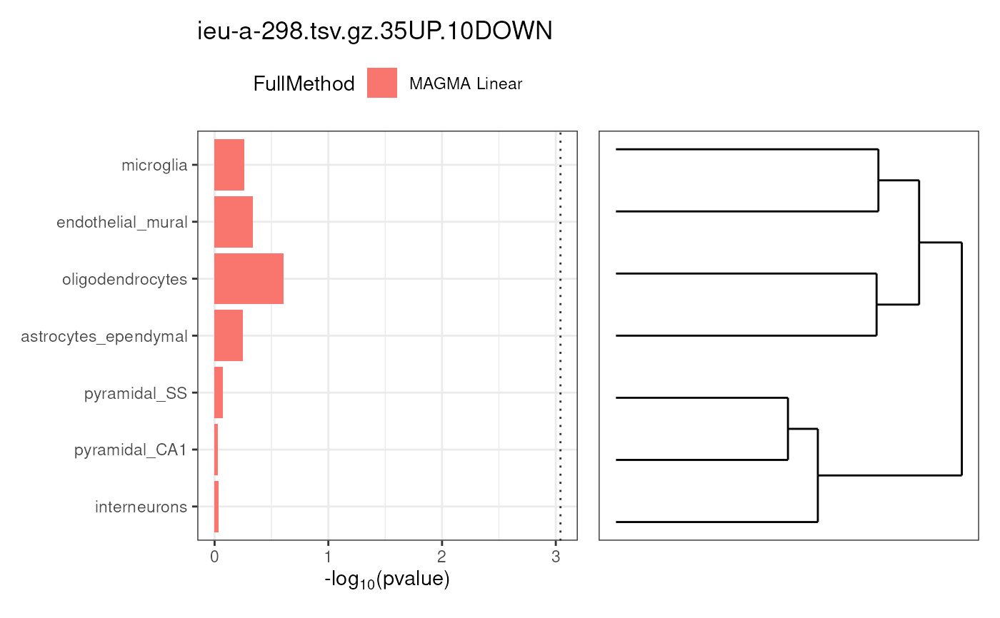
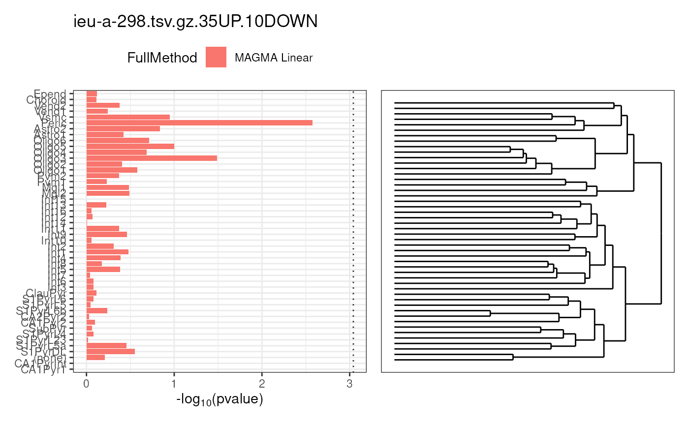

Plot celltype associations calculated using MAGMA
Source:R/plot_celltype_associations.r
plot_celltype_associations.RdCan take input from either calculate_celltype_associations or calculate_conditional_celltype_associations.
Usage
plot_celltype_associations(
ctAssocs,
ctd,
useSignificanceLine = TRUE,
savePDF = TRUE,
fileTag = "",
plotDendro = TRUE,
gwas_title = "",
plotLegend = TRUE,
figsDir = NULL,
show_plot = TRUE,
bind_plots = FALSE,
ncol = 1,
verbose = TRUE
)Arguments
- ctAssocs
Output from either calculate_celltype_associations or calculate_conditional_celltype_associations.
- ctd
Cell type data structure containing
specificity_quantiles.- useSignificanceLine
TRUE or FALSE. Should their be a vertical line marking Bonferroni significance?
- savePDF
TRUE or FALSE. Save figure to file or print to screen?
- fileTag
String appended to the names of the saved PDFs, i.e. the name of the celltype data file used
- plotDendro
Should the dendrogram of celltypes be shown alongside the figure? TRUE or FALSE.
- gwas_title
Title to be displayed over the figure (string).
- plotLegend
Should the figure legend be displayed?
- figsDir
Directory where figures should be created.
- show_plot
Print to the plot(s).
- bind_plots
Bind the list of plots together using wrap_plots.
- ncol
Number of columns to put plots into during
bind_plots.- verbose
Print messages.
Examples
ctAssocs <- MAGMA.Celltyping::enrichment_results[[1]]$ctAssocsLinear
ctd <- ewceData::ctd()
#> see ?ewceData and browseVignettes('ewceData') for documentation
#> loading from cache
figs <- plot_celltype_associations(ctAssocs = ctAssocs,
ctd = ctd,
savePDF = FALSE)
#> Plotting level 1:
#> + Preparing data.
#> + Generating figure.

#> Plotting level 2:
#> + Preparing data.
#> + Generating figure.
